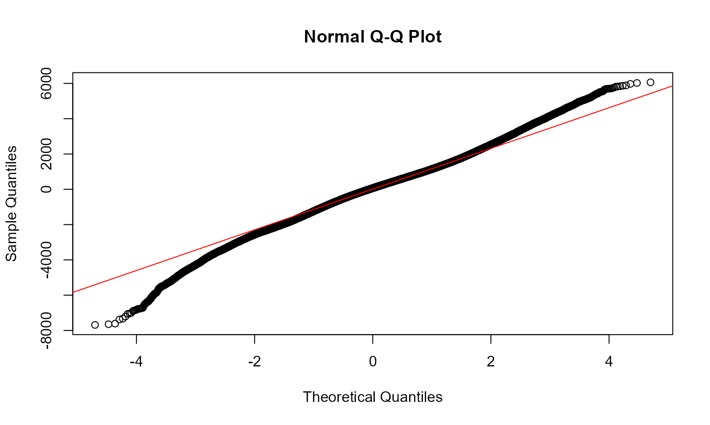
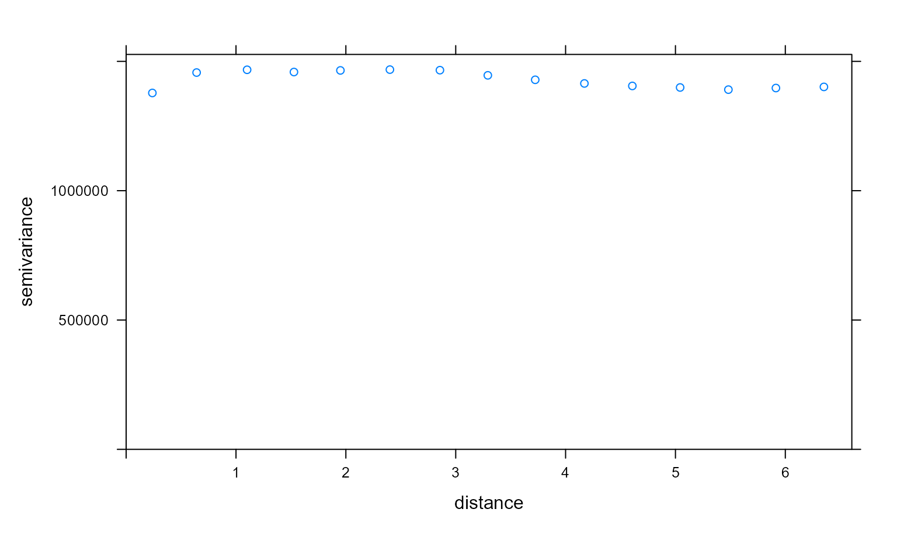
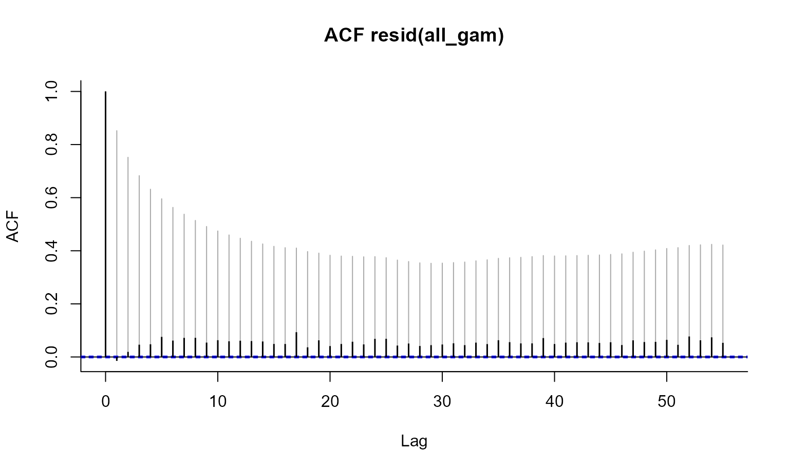
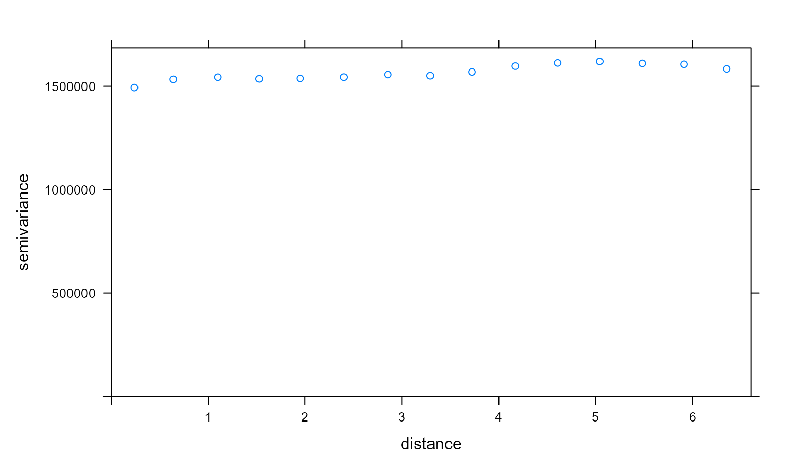
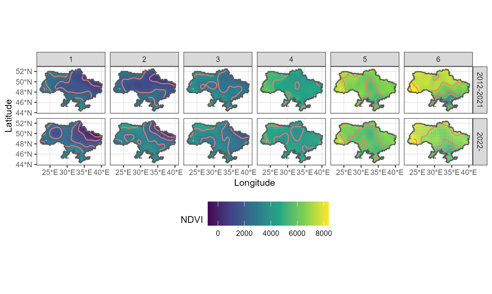
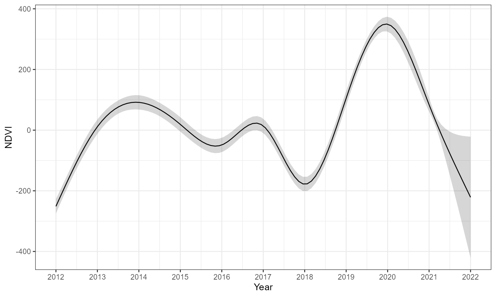

Ukraine NDVI Analysis
Michael Wellington, Roger Lawes and Petra Kuhnert
4 August 2022
Ukraine-NDVI-analysis.RmdOverview
The following script accompanies the paper by Wellington et al. (2022) that explores crop growth, grain exports and fire patterns in Ukraine. This first vignette focuses on trends in crop growth using NDVI.
Reading in relevant datasets
We load in NDVI data clipped to Ukraine and load in the relevant
shape file. These datasets are also available in the /data
and /inst/extdata directories and can be read in using the
readRDS and st_read commands respectively.
library(UkraineCrops)
data(NDVI_mod_df)
data(Ukr_bnds)Creating a pre and post-invasion term
The NDVI_mod_df includes a war term for pre and post
2022 calendar years but we also need to create a pre and post-invasion
term reflected by the date of the invasion (24th of February 2022).
# Allocate factor for invasion
NDVI_mod_df$inv <- as.factor(if_else(NDVI_mod_df$date < '2022-02-24', "0", "1"))Fitting the Generalised Additive Model (GAM)
We fit a Generalised Additive Model (GAM) (Wood 2006) assuming a Gaussian distribution for the response variable, NDVI and include smooth terms for year, season, space and relevant interactions, which consist of season within year, and space and time.
# Setting up the GAM structure with key smoothers for trend terms
all_f <- NDVI ~
# smooth term for year
s(year, bs="cr", k=11) +
# cyclic term for season
s(month, bs="cc", k=12) +
# smooth term for space
s(x,y, bs='gp', k=50) +
# seasonal within year
ti(month, year, bs = c("cc", "cr"), k = c(12,11)) +
# space x time
ti(x, y, year, d = c(2, 1), bs = c("gp", "cr"),
k = c(50,11), m=list(2, NA)) We then add in the factor inv which allows us to
investigate a pre and post invasion effect.
# Setting up the GAM structure with an added term reflecting
# the start of the invasion
all_f_inv <- NDVI ~
# factor for pre/ post-invasion
inv +
# cyclic term for season
s(month, bs="cc", k=12, by=inv) +
# smooth term for space
s(x,y, bs='gp', k=50, by=inv) +
# space x time
ti(x, y, month, d = c(2, 1), bs = c("gp", "cr"),
k = c(50,12), m=list(2, NA), by=inv) We also explore a GAM structure that fits a term reflecting the pre
(2012-21) and post war (2022) periods. This term which we refer to as
war represents a binary variable where 1 indicates year
2022 when the war began.
all_f_war <- NDVI ~
# factor for pre/ post-2022
war +
# cyclic term for season
s(month, bs="cc", k=12, by=war) +
# smooth term for space
s(x,y, bs='gp', k=50, by=war) +
# space x time
ti(x, y, month, d = c(2, 1), bs = c("gp", "cr"),
k = c(50,12), m=list(2, NA), by=war) We now fit each model using the mgcv package in
R and store the results. To accommodate temporal
dependencies we fit a correlation term in each model that was the result
of an iterative process as outlined in Wood et al. (2017). The final
model fits are presented here. Each model takes a few minutes to
run.
# Run GAMs for large datasets
all_gam <- bam(all_f, data=NDVI_mod_df, discrete=TRUE, nthreads=8, rho=0.8)
all_gam_war <- bam(all_f_war, data=NDVI_mod_df, discrete=TRUE, nthreads=8, rho=0.6)
all_gam_inv <- bam(all_f_inv, data=NDVI_mod_df, discrete=TRUE, nthreads=8, rho=0.6)
# Output shows effect of the invasion on cropland NDVI
summary(all_gam_inv)##
## Family: gaussian
## Link function: identity
##
## Formula:
## NDVI ~ inv + s(month, bs = "cc", k = 12, by = inv) + s(x, y,
## bs = "gp", k = 50, by = inv) + ti(x, y, month, d = c(2, 1),
## bs = c("gp", "cr"), k = c(50, 12), m = list(2, NA), by = inv)
##
## Parametric coefficients:
## Estimate Std. Error t value Pr(>|t|)
## (Intercept) 4378.975 2.932 1493.446 <2e-16 ***
## inv1 -11.099 982.597 -0.011 0.991
## ---
## Signif. codes: 0 '***' 0.001 '**' 0.01 '*' 0.05 '.' 0.1 ' ' 1
##
## Approximate significance of smooth terms:
## edf Ref.df F p-value
## s(month):inv0 9.990 10.00 33993.699 < 2e-16 ***
## s(month):inv1 2.983 4.00 1617.662 < 2e-16 ***
## s(x,y):inv0 48.260 48.83 1412.879 < 2e-16 ***
## s(x,y):inv1 33.003 36.09 1.967 0.000487 ***
## ti(month,x,y):inv0 376.214 429.05 127.888 < 2e-16 ***
## ti(month,x,y):inv1 55.979 72.09 8.046 < 2e-16 ***
## ---
## Signif. codes: 0 '***' 0.001 '**' 0.01 '*' 0.05 '.' 0.1 ' ' 1
##
## R-sq.(adj) = 0.716 Deviance explained = 71.6%
## fREML = 3.0937e+06 Scale est. = 7.7897e+05 n = 387617Model Checking
We examine the fit of the model and check for temporal and spatial autocorrelation in the residuals. These diagnostics are examined below and sufficiently account for correlation in the data with the given model structure.
# Temporal autocorrelation plot
check_resid(all_gam, ask=FALSE)
# Variogram for spatial autocorrelation
resids <- residuals.gam(all_gam)
data_pred <- data.frame(resids = resids, long = NDVI_mod_df$x, lat = NDVI_mod_df$y)
coordinates(data_pred) <- ~long+lat
# Select a sample for compute efficiency
var_plot <- variogram (resids ~ 1, data = data_pred[sample(1:nrow(data_pred), 10000),])
plot(var_plot)
Investigating Key Trends
We obtain NDVI predictions for the model and produce maps comparing the baseline period 2012-2021 (top row) with 2022 (bottom row) as per Figure 2 in Wellington et al. (2022). (Note this takes a few minutes to run)
# Get predictions for plotting
all_gam_war_pred <- predict(all_gam_war, se=TRUE)
all_gam_war_pred_df <- data.frame(pred = all_gam_war_pred$fit,
pred_se = all_gam_war_pred$se.fit,
x = NDVI_mod_df$x,
y= NDVI_mod_df$y,
year = NDVI_mod_df$year,
month = NDVI_mod_df$month,
war=NDVI_mod_df$war)
# Filter to current time period to allow comparison of baseline to 2022
all_gam_war_pred_space_df <- all_gam_war_pred_df %>% filter(month < 7)
# Space plot by month
space_month_year_plot <- ggplot(data=all_gam_war_pred_space_df) + geom_tile(aes(x=x, y=y, fill=pred)) +
geom_contour(aes(x=x, y=y, z=pred, col="red"), ) + theme_bw() + facet_grid(war~month) +
scale_fill_viridis_c(name='NDVI') + coord_equal() +
labs(x='Longitude', y='Latitude') + guides(alpha="none", colour="none") + geom_sf(data=Ukr_bnds, alpha=0) +
theme(legend.key.size = unit(1, 'cm'), legend.position = "bottom")## Coordinate system already present. Adding new coordinate system, which will replace the existing one.
space_month_year_plot
We plot the partial effect of year on cropland NDVI in Ukrain with a shaded ribbon denoting plus/minus the standard error from the estimate.
# Plot partial effect of year
all_gam_viz <- getViz(all_gam)
all_gam_year_plot_dat <- plot(sm(all_gam_viz, 1))$data$fit
Ukr_year_plot <- ggplot(data = all_gam_year_plot_dat) +
geom_line(aes(x = x, y = y)) +
geom_ribbon(aes(x = x, ymin = y-se, ymax = y+se), alpha = 0.2) +
theme_bw() +
scale_x_continuous(breaks = seq(2012, 2022,1)) +
labs(y = "NDVI", x = "Year")
Ukr_year_plot
References
Wellington, M., Lawes, R., Kuhnert, P. (2022) Rapid monitoring of crop growth, grain exports, and fire patterns in Ukraine, Nature Food, Under Review.
Wood, S. N., Li, Z., Shaddick, G. & Augustin, N. H. (2017) Generalized Additive Models for Gigadata: Modeling the U.K. Black 166 Smoke Network Daily Data. J. Am. Stat. Assoc. 112, 1199–1210, DOI: 10.1080/01621459.2016.1195744.
Wood, S. N. (2006) Generalized additive models: an introduction with R, Chapman and Hall/CRC.